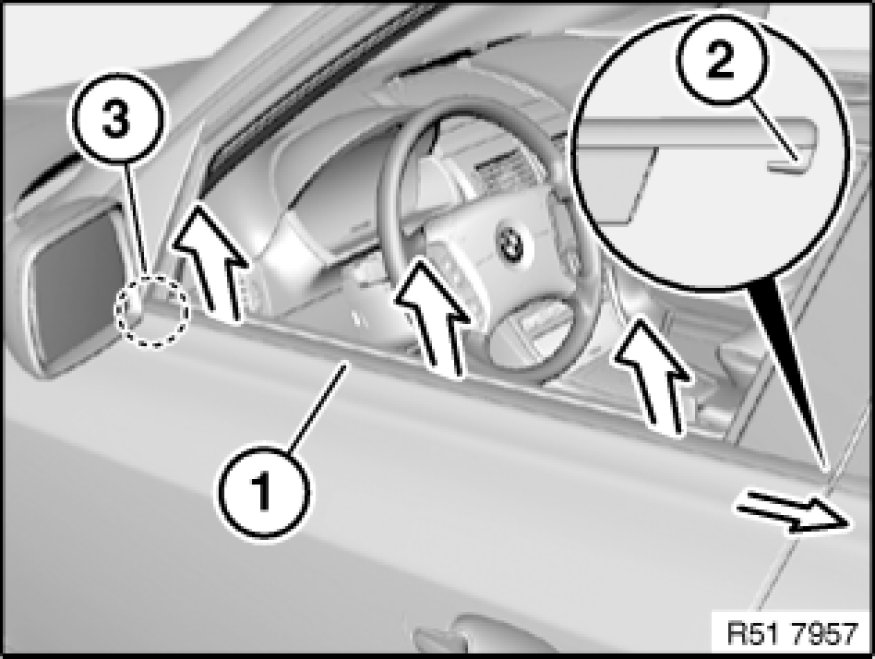
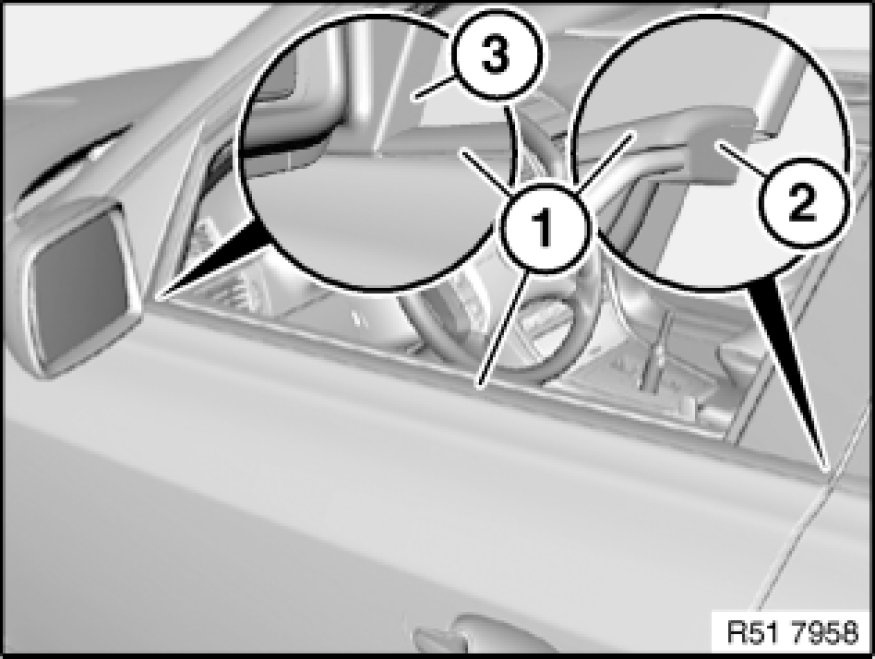

Removing and Installing/Replacing Window Cavity Cover Strip on Outside of Left or Right Front Door
51 21 300 - Removing and installing or replacing window cavity cover strip on outside of left or right front door

Special tools required:
- 00 9 324 00 9 310 Assembly Wedges (Set in Plastic Case)

Important!
Observe procedure Removing Window Cavity Cover Strip With Special Tool 00 9 324 at Front or Rear for using special tool 00 9 324 00 9 310 Assembly Wedges (Set in Plastic Case).

Important!
If reusing the existing window cavity cover strip (1), make sure it is not bent.
Lever out window cavity cover strip (1) with special tool 00 9 324 00 9 310 Assembly Wedges (Set in Plastic Case) (starting at B-pillar).
Slide window cavity cover strip (1) towards rear and feed out of guide (2) and door mirror (3).

Installation Note:
Coat window cavity cover strip (1) with water before fitting.
Feed in window cavity cover strip (1) first at guide (2) and door mirror (3), and then press into door.
Window cavity cover strip (1) must be flush at rear to door edge.